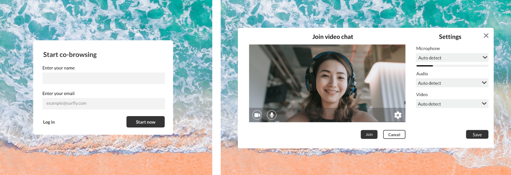
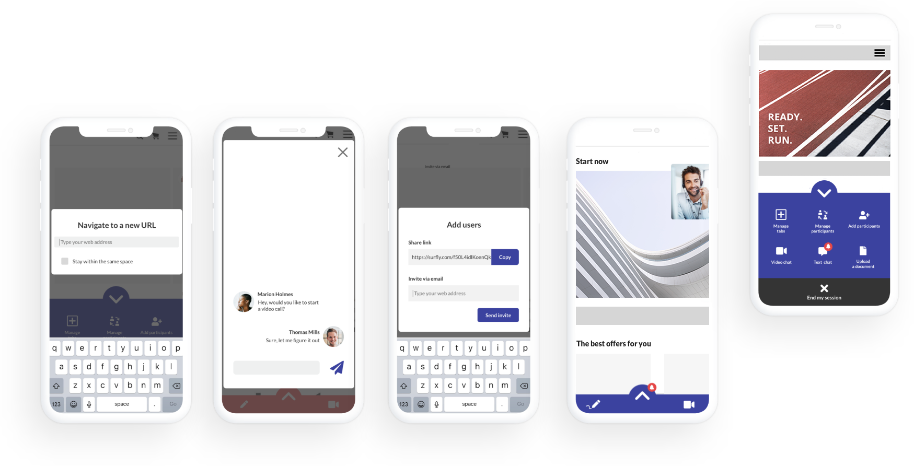

Surfly is the global market leader for co-browsing technology, powering in-person online experiences for more than 100,000 users and over 2 million sessions per year. Leading organizations use Surfly to upgrade existing Phone, Chat and Email channels with in-person online co-browsing experiences, resulting in greater customer satisfaction that exceed expectations. Following an easy setup, organizations can humanize existing interactions across all channels, systems and departments.
Aside from providing a co-browsing solution, we wanted to introduce a better video
and text chat functionalities, drastically improve mobile experience for the users
and ease every step of the user’s journey.
Being able to have a smooth upgrade to a co-browsing session. There are different ways the user can start a communication with their customer with: a phone call, a video call, a support chat.
To establish trust between them and their customer. There are a lot of instances where there is a sensitive information involved. Provide a secure experience.
Great mobile experience. A lot of their customers call in from their mobile device. The agents want to see an easy device detection so they can ensure the best support possible.
The dashboard was redesigned to accommodate the agents and their needs: simple process of switching their aviability status, most visited pages for a quick access (since they tend to go through the same pages with their customers again and again).
The video chat functionality and its usability are very important for our users. A lot of times they either want to switch a conversation from a phone call to a video chat or it’s important to them to establish a connection with their customer before jumping into helping them.
Different users use different devices to browse online. After studying what kind of devices the agents prefer, we could understand how to improve thier device detection on the other side in order to provide the best support.
A lot of users call for support from their mobile devices. They might want to share their back camera view, snap a picture or they might be in a situation where they can’t do a video chat but would be happy to talk with text messages.
The users would like to be able to admit new people into their session, to make their interactions more secure. Currently, anyone with a link can enter a Surfly session. By adding the admission flow, we will be able to provide a better user experience and ensure that the user has control over their sessions.